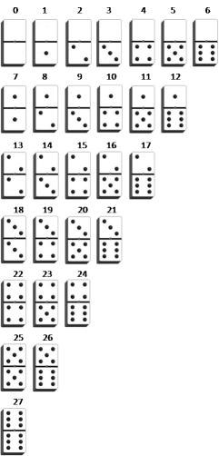

TC 1028. Pensamiento Computacional para Ingeniería
. |
Actividad: Desarrollando algoritmos
 Desarrollando algoritmos
Desarrollando algoritmos
Deberás desarrollar los algoritmos que solucionen
los problemas que se presentan en la actividad.
 Modalidad
Modalidad
Equipos colaborativos.
 Objetivo
Objetivo
Instalación del ambiente de desarrollo.
 Instrucciones
Instrucciones
- Analiza cada uno de los ejercicios que se
presentación a continuación. Identifica cual sería el algoritmo para la
solución de los ejercicios.
- Redacta el algoritmo en pseudocódigo, cumpliendo
con todas las características que hemos visto que un algoritmo debe tener.
Puedes hacerlo en un archito .txt o tomar fotos de tus apuntes siempre y
cuando la imagen sea legible.
- Has pruebas manualmente siguiendo los pasos para
ver en que casos sirve y en que casos no.
Problemas:
- Calcular la suma de los números pares
menores o iguales a N, donde N es pedido al usuario.
- Dadas tres cantidades enteras positivas que
representan la longitud de tres segmentos de línea, se quiere determinar
las siguientes situaciones:
- ¿Es un triángulo? Si los valores de dichas
cantidades pueden corresponder a las longitudes de los lados de un
triángulo.
- ¿Es escaleno? En el caso de que las medidas
puedan corresponder a las longitudes de los lados de un triángulo,
si dicho triángulo es escaleno.
- ¿Es equilátero? En el caso de que las
medidas puedan corresponder a las longitudes de los lados de un
triángulo, si dicho triángulo es equilátero.
- ¿Es isósceles? En el caso de que las
medidas puedan corresponder a las longitudes de los lados de un
triángulo, si dicho triángulo es isósceles.
- Las fichas del dominó se pueden enumerar
de forma ordenada como se muestra en la siguiente figura: Dado los dos
números de la fichas, superior e inferior, determinar el número asociado
según la figura anterior.

- Dado un número, obtener su inverso
numérico. Por ejemplo, si el número es 1234, el resultado debe ser 4321.
5.
- Convertir un número de decimal a binario.
- Determinar si un número es primo o no. Un
número primo es aquel que sólo puede ser divido entre la unidad y el
mismo.
 Recursos
Recursos
 Especificaciones de entrega
Especificaciones de entrega
- Sube tus algoritmos a la plataforma
alphagrader en un zip, en la sección
de algoritmos. En este video se muestra como crear tu cuenta:
- Los algoritmos serán evaluados usando
la siguiente lista de cotejo.
.
© 2019 Escuela de Computación y
Mecatrónica
. |